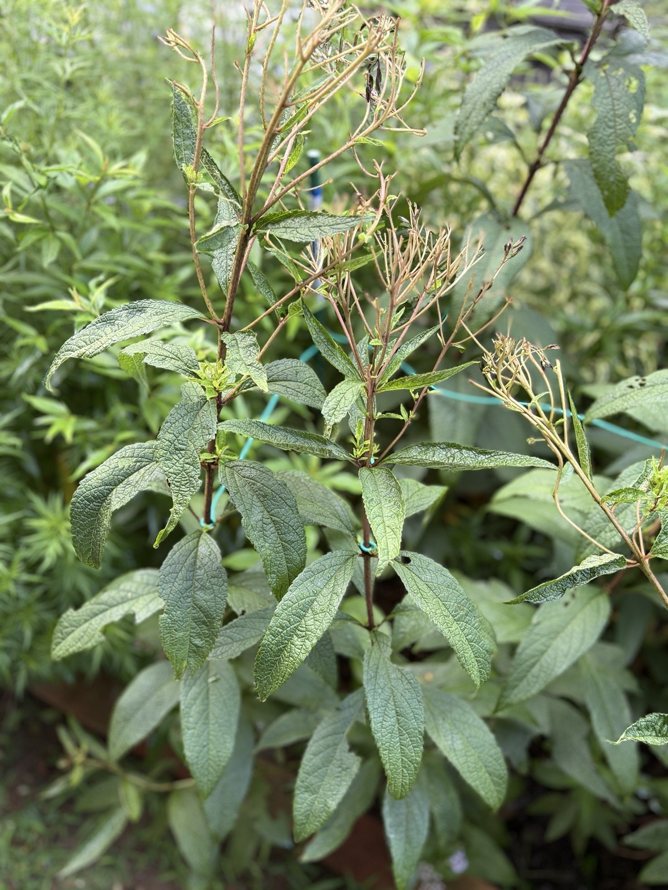
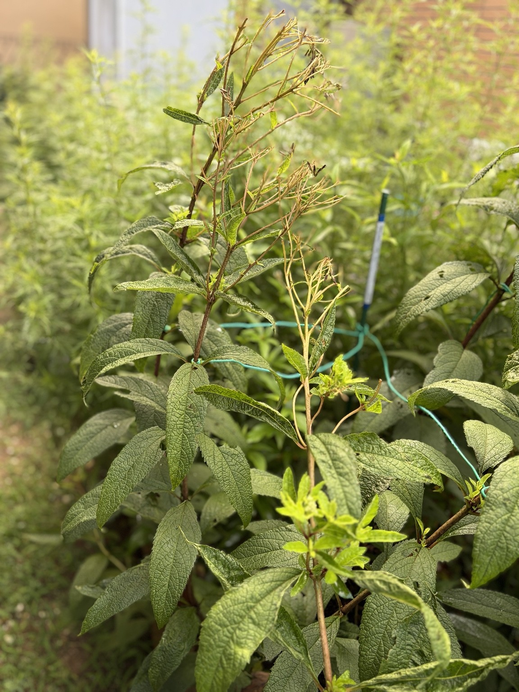
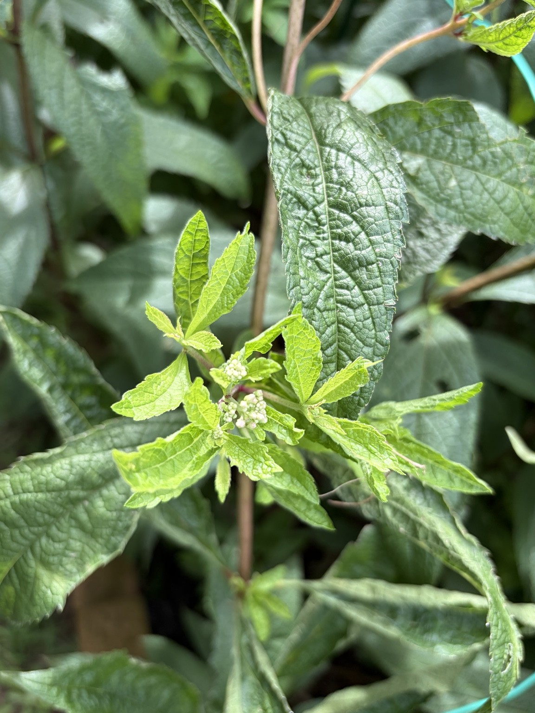
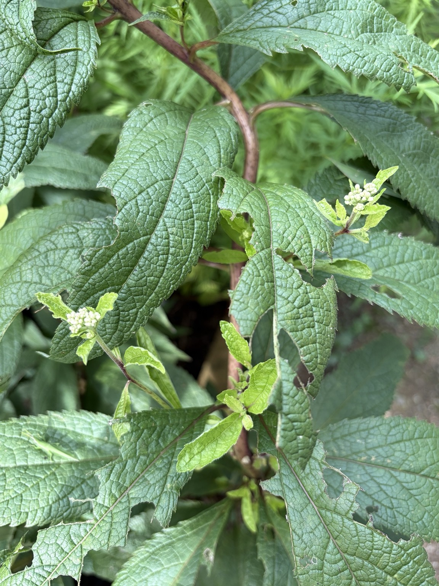
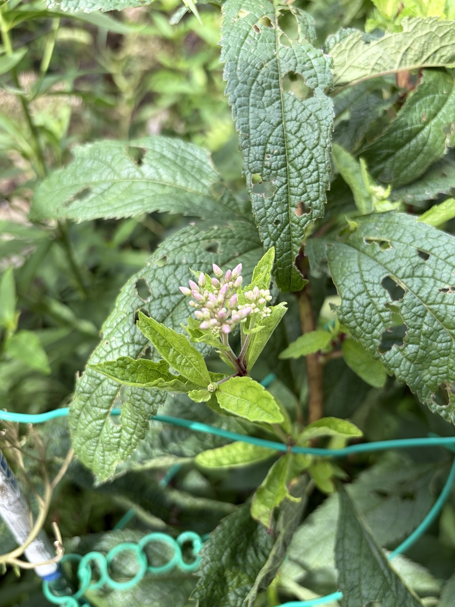
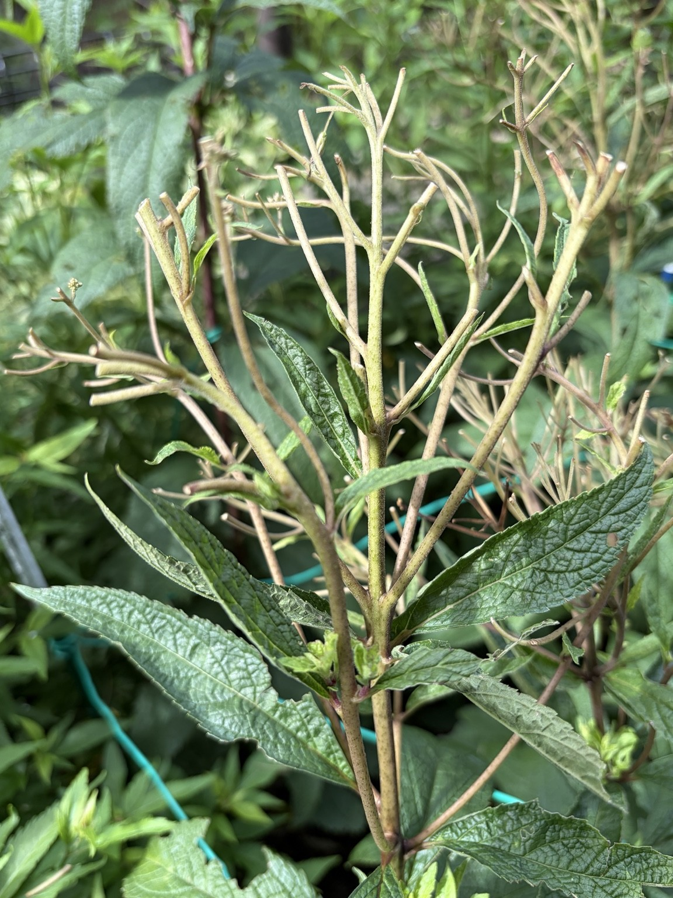
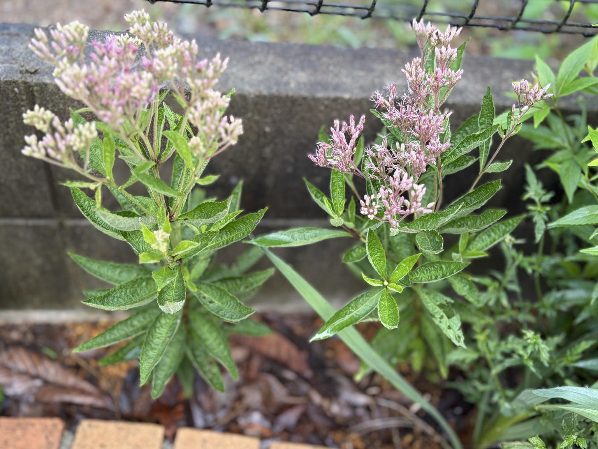
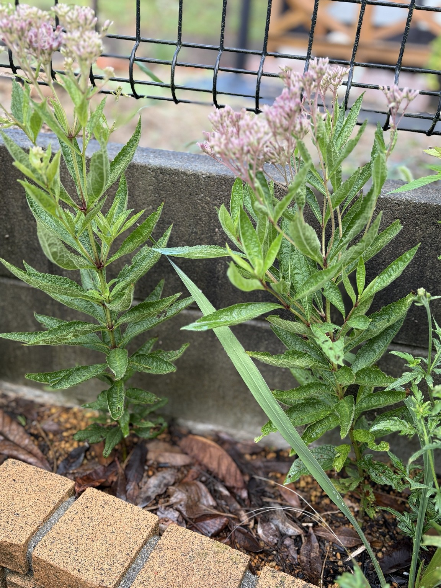
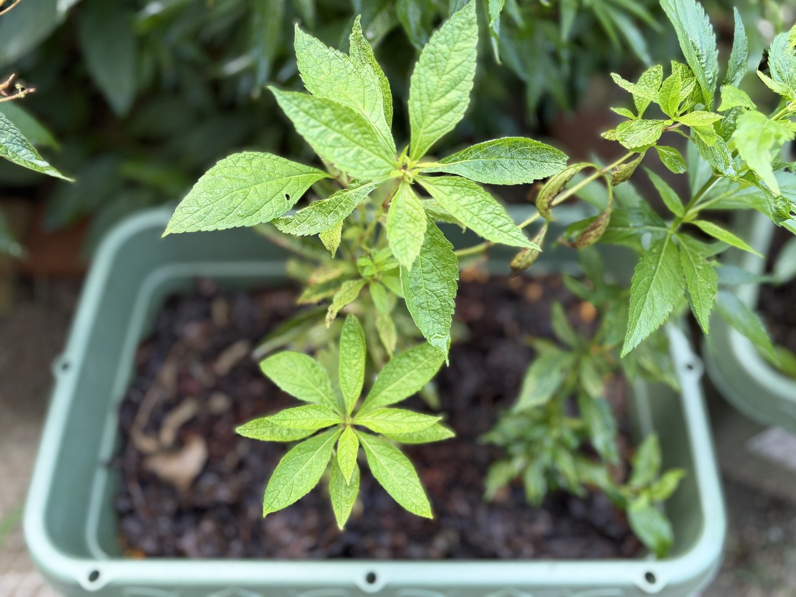

8月末に花がらだけを切り、古い茎・節と小さな芽を残して観察。9月5日、新芽が伸びた先に新しい蕾を確認しました。
花がらだけを切って、古い茎と節を残しました
8月上旬に満開を迎えたベイビージョーも、8月末には花がほぼ終わりました。
今回は茎を大きく切り戻さず、枯れた花がらだけを切除して、古い茎や節、その周辺に残っていた小さな芽はできるだけ残しておきました。
9月5日に確認してみると、花序の細い枝は茶色く枯れ込んでいるものの、残しておいた節や古い花序の周辺から、明るい緑色の小さな新葉・新芽がいくつも出てきています。






新芽が伸びた先に蕾を確認
8月上旬に満開 → 8月末に花がらだけを切除 → 新葉・新芽が発生 → 9月5日に蕾を確認
さらによく見ると、その新芽が伸びた先には小さな蕾も確認できました。
花が終わった時点では、ここからもう一度蕾が上がってくるのか分かりませんでしたが、花がらだけを切って節や小さな芽を残したことで、その芽が次の生長につながっているようです。
このまま蕾が大きくなって再び開花するのか、二番花としてどの程度咲いてくれるのか、引き続き観察していきます。
挿し木株も開花
春に挿し木して育ててきたベイビージョーも、しっかりと成長しました。地植えにした挿し木株では花を咲かせています。


親株の花後に新しい蕾が動き始める一方で、挿し木から育てた地植え株は開花。挿し木からでもここまで育って花を咲かせることが確認できました。
プランターの挿し木株
7月12日にプランターへ植え替えた挿し木株も、その後葉を広げながら成長しています。地植えの挿し木株とは生育の進み方に差が見られるため、こちらも引き続き変化を記録していきます。
